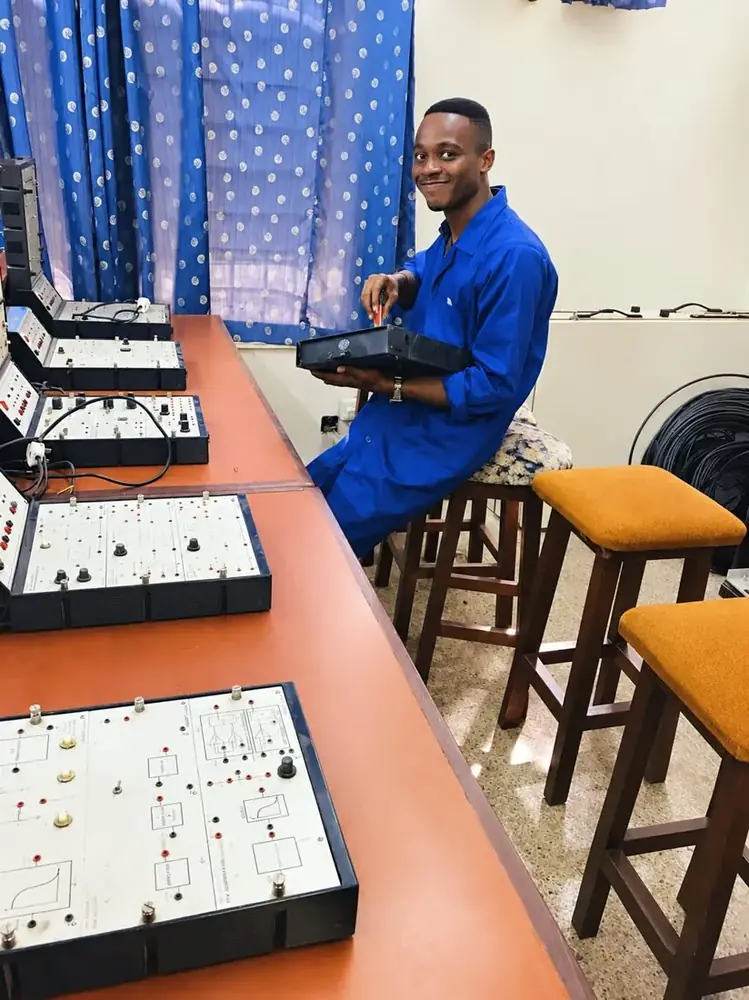
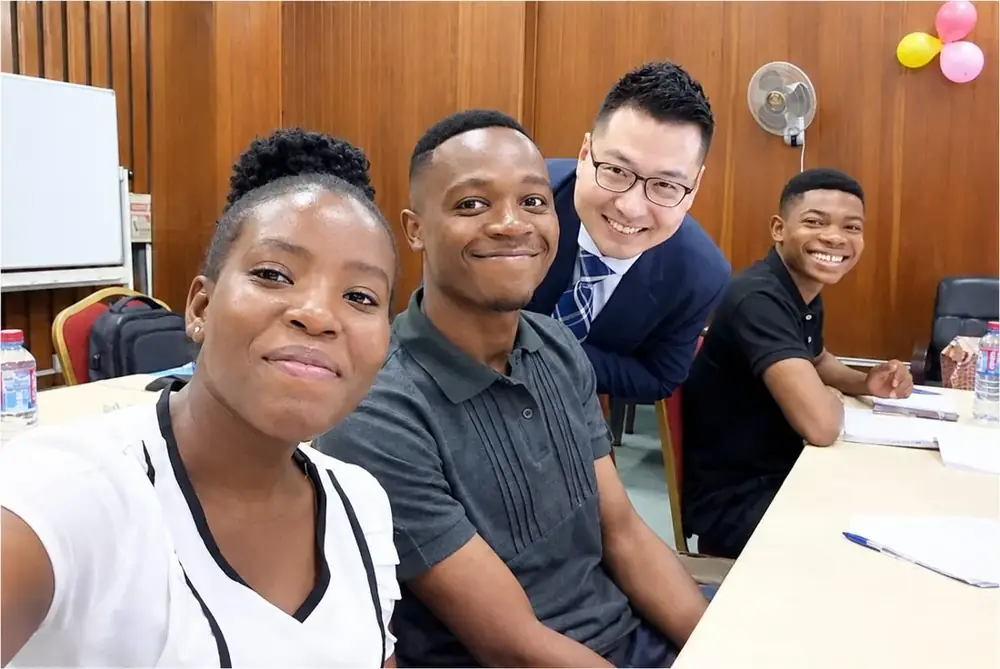
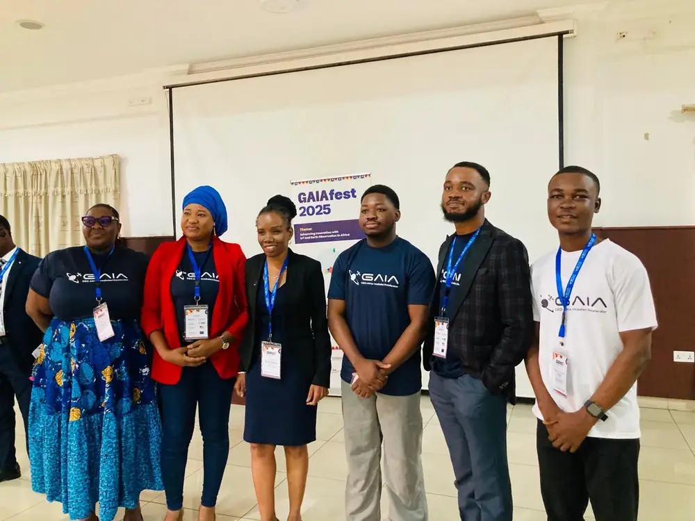
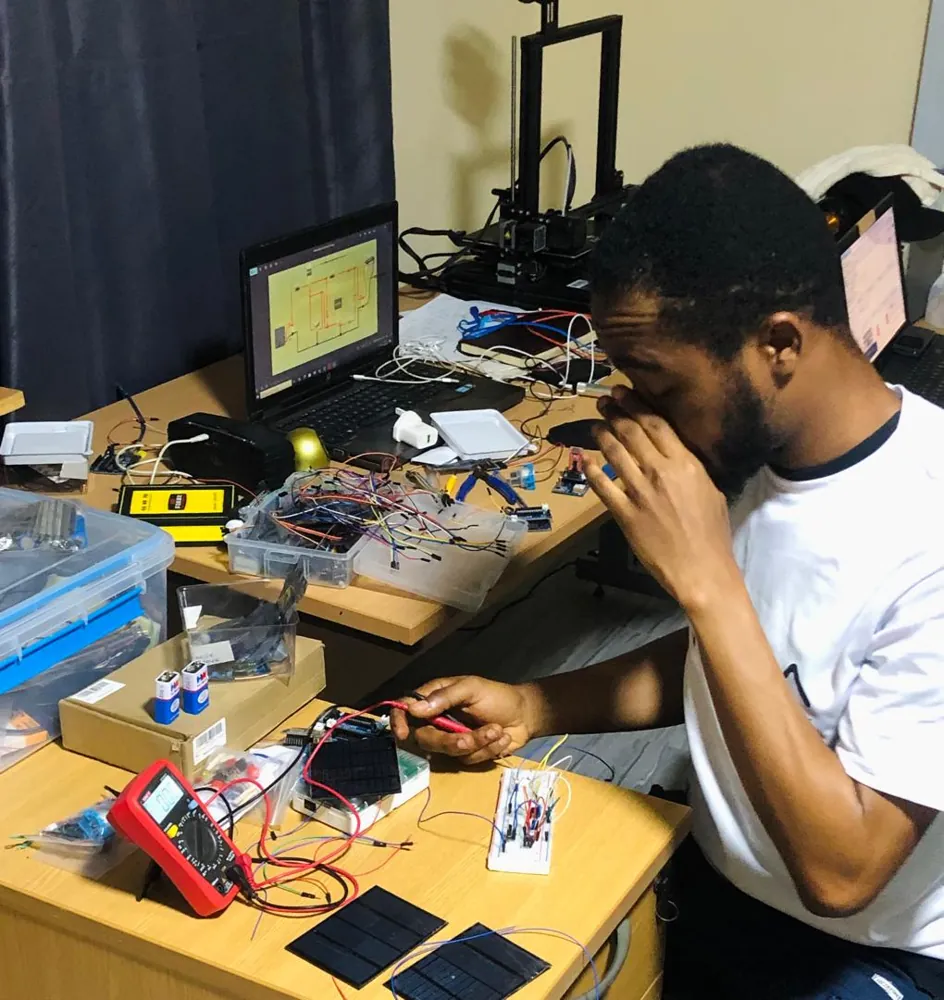

Where it began
Every journey has a quiet beginning. Mine started in workshops, labs and classrooms, among good teachers and friends, long before any of the projects you see here.




- City & Guilds
My journey started with City & Guilds, a programme that began under the leadership of Mrs. Araba Akanji, then Director of the GCTU Centre for Strategic Business and Professional Development (CSBPD), who led us into the course. There I earned a Level 3 Diploma in Electrical and Electronic Engineering, under the same roof as what is now GCTU.
- Solar engineering
Mrs. Akanji also spearheaded our solar training so we could learn more. Our class was graciously hosted at the South Korean Embassy to study solar engineering with ILYANG, alongside KOTRA, under instructors who took the time to teach us properly.
- Internship
In October 2018 GTUC's Faculty of Engineering appointed me Laboratory Assistant in its Laboratory Unit, from November 2018 to August 2019, helping to teach the City & Guilds programme. I got my hands inside real equipment, including a Degem Systems power supply. That blue overall is where engineering stopped being theory for me.
- Today
Now I am back where it started. I lecture the City & Guilds Level 3 Diploma in Electrical & Electronics Engineering at GCTU and run the new Energy Lab, passing on what those early years gave me.
Acknowledgments
Dedicated to the loving memory of my mother, Barbara Tetteh, who believed in me before I gave her any reason to. I carry her into every room I walk into.
I am deeply grateful to Prof. Ruhiya Abubakar and Dr. Emmanuel Kwame Effah of Ghana Communication Technology University, for their patience, their red pens, and the high standards that made me a better engineer and researcher.
My sincere thanks go to Engineer Sammy Obeng-Addae, the godfather of my studious focus, who kept me disciplined through City & Guilds and continues to do so today, and to Mrs. Araba Hackman Akanji, whose leadership opened the City & Guilds programme to us and whose guidance I did not always know I needed.
I extend my appreciation to Ing. Thomas Kwadwo Boakye, who helped me grow in the laboratory and pushed me toward more hands-on, practical work.
To my brothers, George Osei Boadu and Moses Quayson: thank you for being home, no matter how far I go. And to my godmother, Mrs. Evelyn Afi Geh, a cleaner by profession and a visionary by heart: you saw an engineer in me long before I could, and that belief changed the direction of my life.
I miss my mother dearly, and I remain forever grateful to everyone who pushed me this far.
Jeremiah Fiifi Tetteh